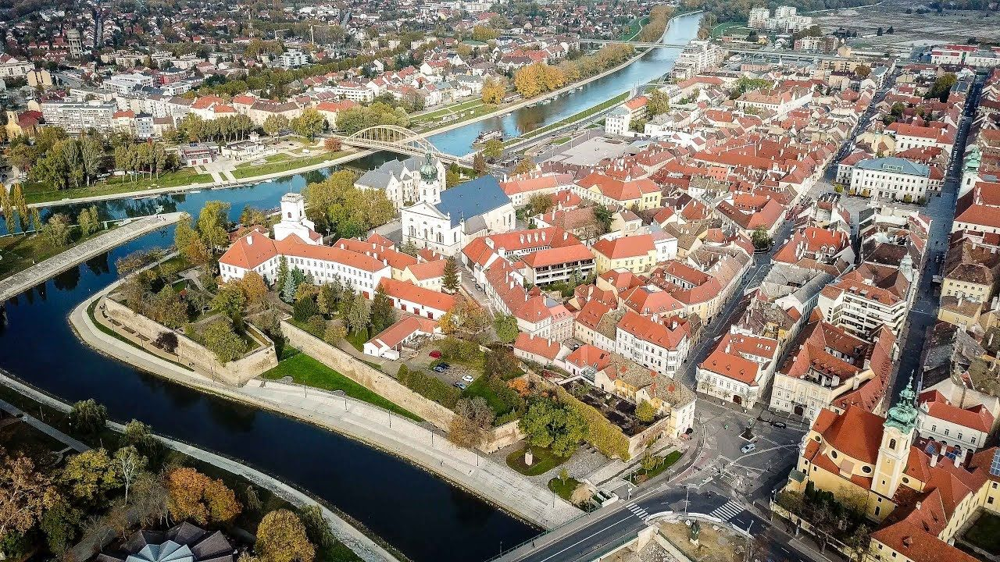
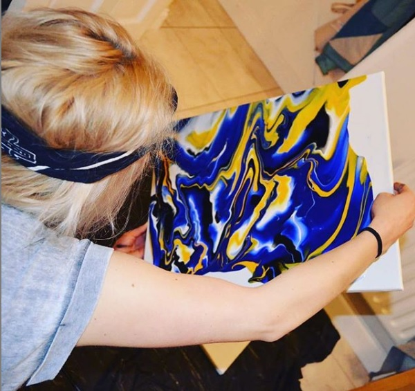
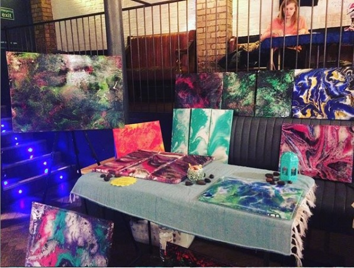

I was born in 1994 in Győr, Hungary. From young age i was interested in art in many forms, but I only started to show serious interest around my teenager years. After graduating high school I intented to go to university and study biology, but after 2 years I left and moved to Ireland. I fell in love with the beauty of the country side. I started to sell my pantings in the famous Ha'Penny market  in the Grand social Dublin. And that's how my art journey began...